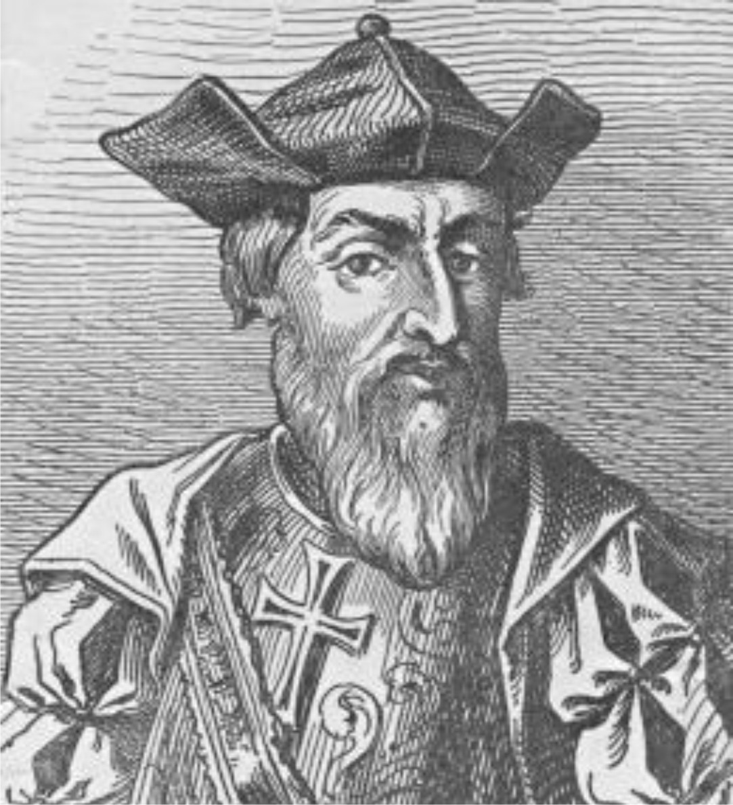

|
Vasco da Gama (1469?-1524), Portuguese explorer and navigator,
who was the first person to reach India from Europe by a sea route. Da Gama was
born in Sines, in southwestern Portugal. He joined the Portuguese navy at a young
age and participated in the wars against the Spanish kingdom of Castile. Little
else is known of his early life.
Voyage to india
Following the discovery in 1488 of the Cape of Good Hope by Portuguese navigator
Bartolomeu Dias, Portuguese king John II ordered the construction of a fleet to
seek a maritime route to the Indies. The Portuguese had been spurred by the
discoveries of Italian-Spanish explorer Christopher Columbus and by the fear
that the Spanish might reach the Indies and tap their wealth first.
John died in 1495, however, before the completion of the ships.
He was succeeded as king by Manuel, who issued orders for the expedition
and, impressed by da Gama’s ability, appointed him to lead it.
|
Vasco Da Gama Later Voyages
To follow up the discoveries of da Gama,
Manuel immediately dispatched Portuguese navigator Pedro Álvares Cabral to India.
Cabral established a Portuguese trading post in Calicut. When news reached Portugal
that those stationed in Calicut by Cabral had been massacred, da Gama was sent to avenge
that act. On the way to India he attacked Arab Muslim ships ruthlessly.
One ship he sunk carried more than 400 men, women, and children returning
from a pilgrimage to Mecca. Arriving in Calicut, da Gama quickly subdued the inhabitants,
impressing them with the superior firepower of the Portuguese and forcing the ruler
to make peace. On his return voyage he established Portuguese colonies at Moçambique
and Sofala on the coast of what is now Mozambique. He returned to Portugal
in September 1503 having accomplished his mission and bearing a rich cargo
of spices, but he left behind a memory of useless cruelty that damaged the
Portuguese name for generations.
Richly rewarded by the Portuguese royal family for breaking the Arab Muslim monopoly
on trade with India, da Gama settled down to profit from his ventures.
For the next 20 years he saw no active sea duty. He received the title
of count of Vidigueira in 1519. In 1524 he was named viceroy and sent
to India to correct the mounting corruption among the Portuguese authorities there.
Da Gama reached India in the autumn of 1524, but he died in Cochin only
three months after his arrival.
He was buried in Goa, on the coast of India, but in 1539 his remains were
conveyed to Portugal and interred in the Church of Vidigueira.
There the coffin remained until 1880, when it was transferred to a marble
sepulcher in the church of the Monastery of the Jerónimos at Belém, outside Lisbon.
This monastery had been erected by Manuel as a token of the country’s
gratitude to da Gama. Later it was proved that the wrong coffin had
been removed from Vidigueira and in 1898, about 400 years after da Gama’s
first voyage, the coffin that contained his true remains was placed in the
sepulcher. The tomb lies very near that of Camões, Portugal’s most famous poet,
who commemorated da Gama’s deeds in his epic 1572
|